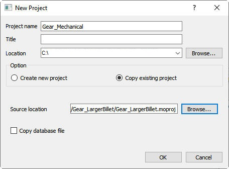
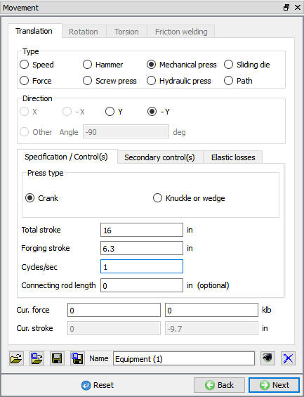
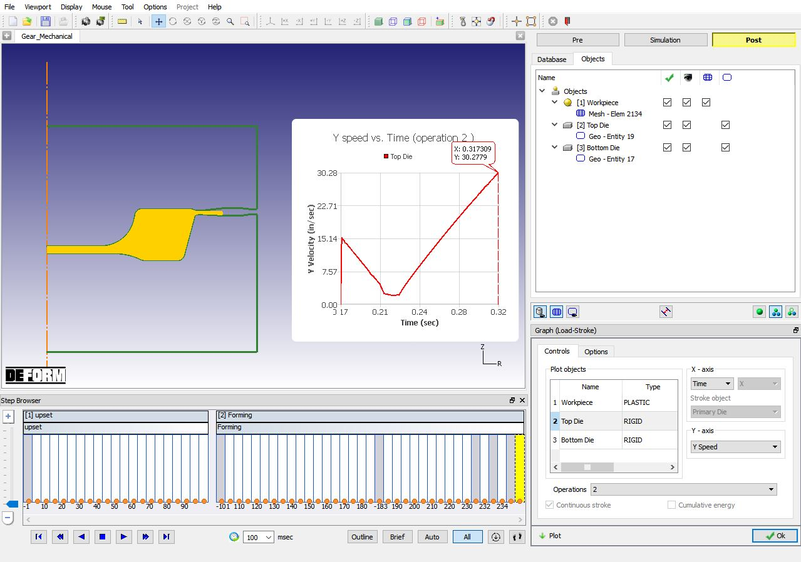

In multiple operations, interactive mechanical press setup is significantly different than scheduled setup. We will work through both.
Because of the unique kinematics of a mechanical press, we need to know exactly whether the press is in the top-bottom (or front-back) stroke at any time. This means we need knowledge of the starting position.
When defining a mechanical press, there are special terms that should be understood:
Total stroke is the total ram movement from Top Dead Center (TDC) to Bottom Dead Center (BDC).
Forging stroke is the distance the ram travels from the time it first touches the workpiece until it reaches BDC.
Strokes/second is the flywheel speed in cycles/second (matches the press speed on a non- clutch driven press).
For this tutorial, we will use a Total Stroke of 16 in. and a Strokes/second of 1 (i.e. 60 RPM).
Create a new project called Gear_Mechanical and copy the existing project Gear_LargerBillet.

MO New Project window
In an interactive setup, we can start with the Top Die positioned correctly on the workpiece. So, click the first Upset operation tile. Go to Top Die Movement page from Operation tree.
Change the movement type to Mechanical press. Set the Total stroke to 16 in. and the Forging stroke to 6.3 in (distance
from the current position to BDC). Set the Cycles/sec to 1 (See Fig. L6.2.). Click  until Stopping controls page
until Stopping controls page

Top die movement page
Set the stopping stroke (Primary die displacement) to 16 in. (Y direction), which is equal to the total press stroke. Click  until Generate DB page.
until Generate DB page.
Generate the Database and click to 2nd operation.
In a batch setup, we generally do not know where the ram will be relative to BDC when it touches the workpiece. Therefore, we need to start with the ram in a known position, and update the movement controls when the model is run.
We will use the TDC position as a standard reference position, then use scheduled positioning to update the tool position and forging stroke.
Go to Positioning page from Operation tree.
Interference position the Top Die down to the Bottom Die
Offset position the Top Die up by the flash gap of 0.2 in
Offset position the Top Die up by the total forging stroke of 16 in. Now the die is at TDC.
Now go back to Top die movement page.
Define Mechanical press with Cycles/sec = 1 and define both the Total stroke and Forging stroke to 16 in. Click  until Scheduled positioning page.
until Scheduled positioning page.
Interference positioning the Workpiece down to the Bottom die.
Interference positioning the Top Die down to the Workpiece. Notice how the Update current stroke option is checked and grayed out. The die stroke will be automatically updated when this positioning occurs during the simulation. Click  until Stopping controls page.
until Stopping controls page.
Set the Primary die displacement to 16 in (Y direction) and under Die distance tab click the  to initialize the Die distance stopping controls data.
to initialize the Die distance stopping controls data.
When the project runs, the tool will be moved into position in contact with the workpiece (whatever the shape is) and the forging stroke will be updated to reflect the new distance above BDC.
Save the project and click on the MO  Mode button (above the operation tree) to start the simulation.
Mode button (above the operation tree) to start the simulation.
Click on the  action label to open the Run Options dialog. Use the default Continue Run option
to select “Continue from the last step” option and then select the Simulation mode as Interactive radio button. Click on
action label to open the Run Options dialog. Use the default Continue Run option
to select “Continue from the last step” option and then select the Simulation mode as Interactive radio button. Click on  button to run
the simulation.
button to run
the simulation.
When the simulation is completed, click the MO  Mode button to review results.
Mode button to review results.
Play through all steps.
Graph
Click the  tool and plot Y Speed vs. Time graph. Note that the velocity goes to zero at the end of each operation.
tool and plot Y Speed vs. Time graph. Note that the velocity goes to zero at the end of each operation.

Y-Speed v/s Time graph